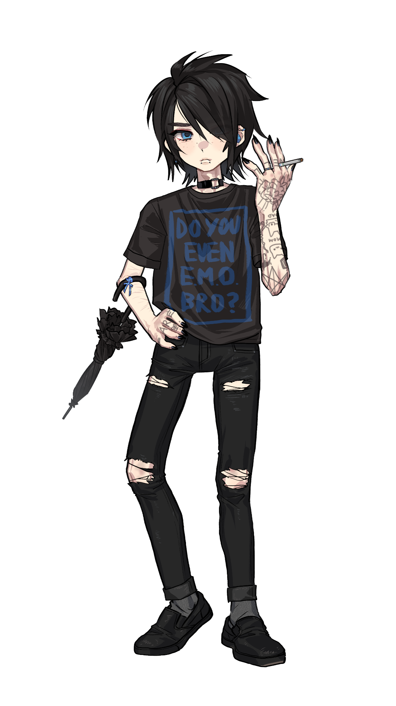
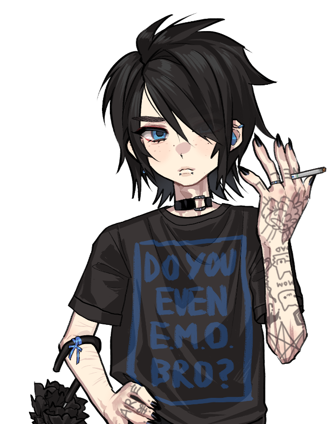

Hope
Retake-2026 の最初の公開テスト。
京成線のざわめき、下町育ちの声。 誰かの影ではなく、今の声で歌う。 冷たく、鋭く、感情的に。
冷たく鋭い、やや中性的な声質。以前よりも発音にこだわり、感情的な歌唱表現を重視したRetake。
A4裏声
邪悪囁き / Evil Whisper
Growl / グロウル
冷たく鋭い、やや中性的。中音域～高音域を得意とする。
VCV / 連続音。UTAU・OpenUtau等で利用可能。
EMO / POST-HARDCORE / SCREAMO その他、力強く感情的な楽曲。

京成線のざわめき、下町育ちの声。 誰かの影ではなく、今の声で歌う。 冷たく、鋭く、感情的に。
キャラデザイン・立ち絵：セツさん 原音設定：NakoTalk様
日本語多音階連続音。主体6音階 + A4 裏声 + 邪悪囁き + グロウル。
DOWNLOAD LINK — PREPARING
voicebank / README
Terms JA / ZH / EN
character info
credits
無断再配布禁止。制作者が3年以上完全に連絡不能となり公式配布も消失した場合のみ、規約条件下で保存目的ミラー可。